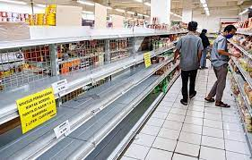

Teka-Teki Kelanglaan Minyak Goreng
Dari -- UNAIR NEWS- Kelangkaan minyak goreng di Indonesia masih terus terjadi. Pakar ekonomi Universitas Airlangga (UNAIR) Rossanto Dwi Handoyo SE MSi PhD menyebutkan bahwa kelangkaan minyak goreng di pasaran tidak terlepas dari mekanisme penawaran dan permintaan atau supply and demand
Minyak goreng merupakan salah satu komoditas penting di Indonesia. Berdasarkan IHK (Indeks Harga Konsumen) Indonesia, minyak goreng memiliki kontribusi yang besar. Hal tersebut karena minyak goreng merupakan salah satu barang yang dikonsumsi masyarakat setiap harinya. “Bobot terhadap inflasinya juga cukup tinggi,” ucap Rossanto.
Naiknya Harga Minyak Nabati
CPO (Crude Palm Oil) merupakan salah satu jenis minyak nabati yang paling banyak diminati oleh masyarakat dunia. Saat ini harga CPO di pasar dunia sedang mengalami kenaikan harga. Kenaikan itu dari $1100 menjadi $1340. Akibat kenaikan CPO, produsen minyak goreng lebih memilih menjual minyak goreng ke luar negeri dibandingkan ke dalam negeri. “Produsen akan mendapatkan keuntungan yang lebih besar apabila menjual minyak goreng ke luar negeri,” jelasnya.
Pemerintah Mencanangkan Program B30
Faktor kedua adalah kewajiban pemerintah terkait dengan program B30. Program B30 adalah program pemerintah untuk mewajibkan pencampuran 30 persen diesel dengan 70 persen bahan bakar minyak jenis solar. “Ada peralihan menuju ke produksi biodiesel,” terangnya.
Saat ini, terang Rossanto, konsumsi yang seharusnya digunakan untuk minyak goreng digunakan untuk produksi biodiesel. Hal itu karena ada kewajiban untuk pengusaha CPO agar memenuhi market produksi biodiesel sebesar 30 persen.
Penulis mendapatkan sumber/article dari: UNAIR NEWS